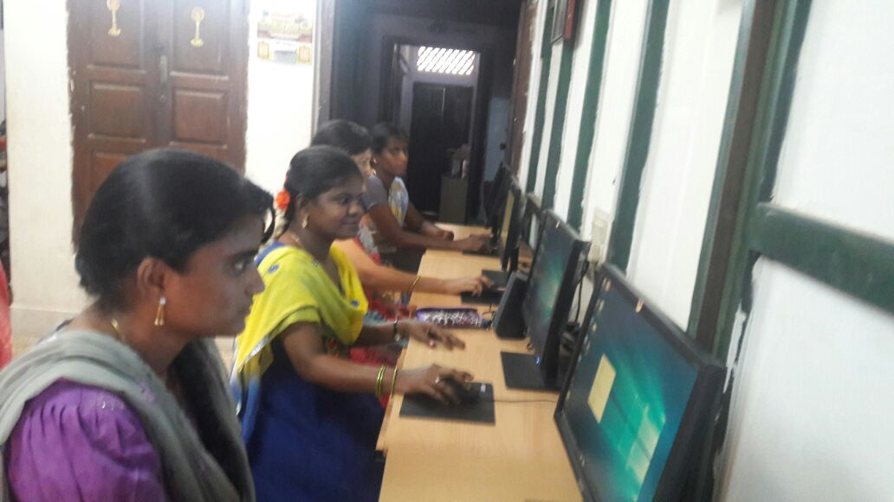
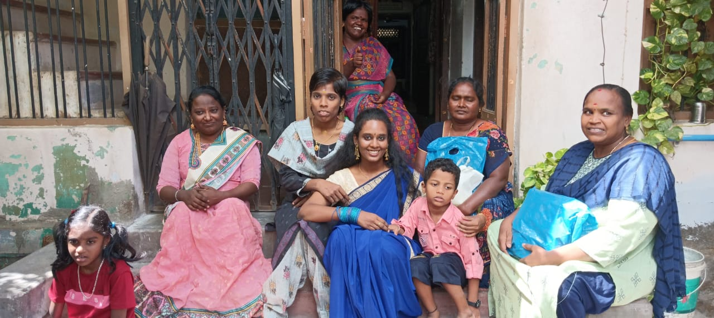
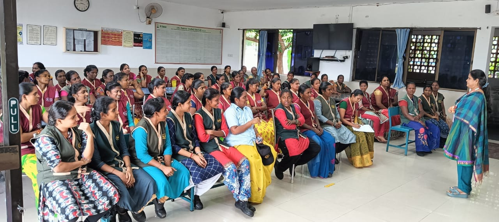
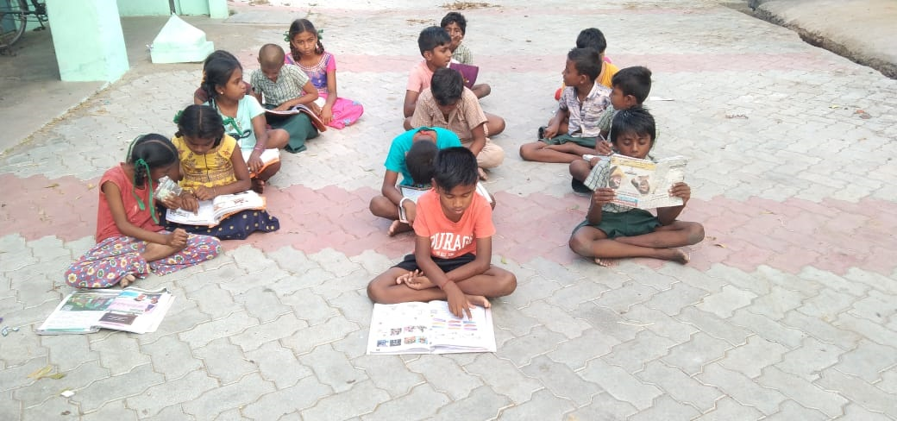
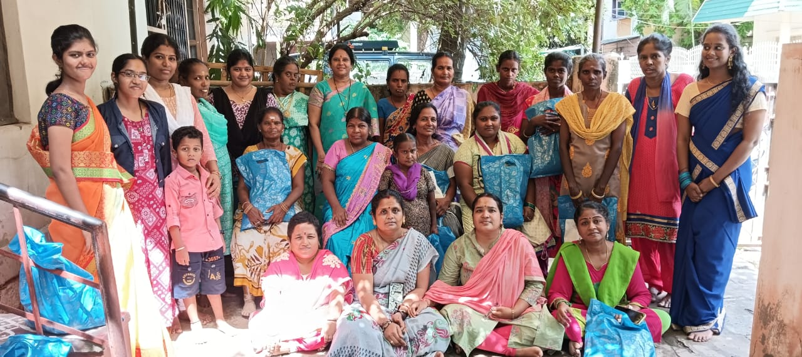
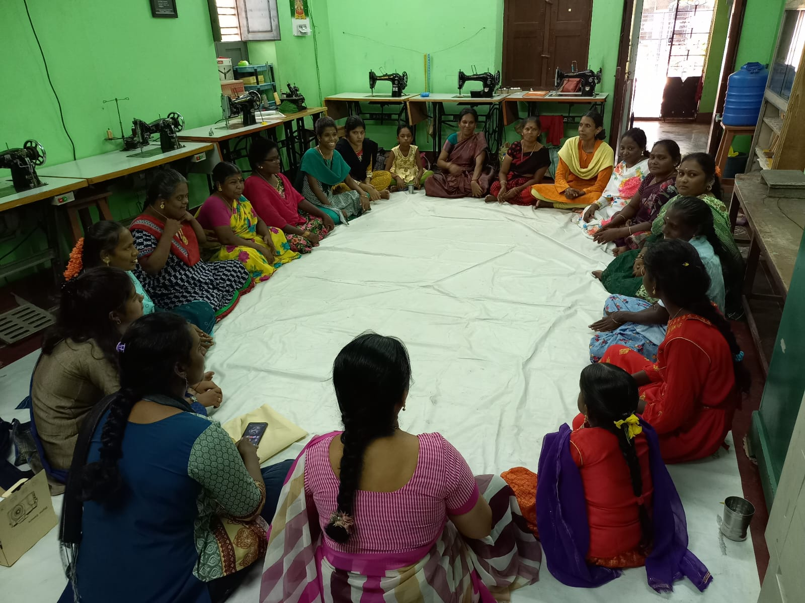
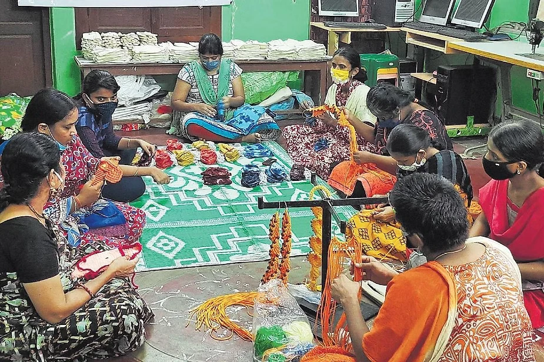

Thiyagam Trust provides tailoring training and job placements for physically challenged and
illiterate girls, focusing
on skill-building for self-employment. Training is tailored to their abilities, with motor-fitted
sewing machines for
those who have lost their legs. Many graduates start their own income-generating activities with
technical support. The
high-quality training secures continuous job offers, especially for cotton bag production.
Additionally, dressmaking
training and industrial visits enhance skills, making Thiyagam a reputed tailoring unit in Madurai.
Computer Centre

Thiyagam Trust provides free computer education for physically challenged girls, especially from
rural areas, who
struggle with high costs and poor transport. Training covers basics to job-oriented courses, with
placement assistance.
Job opportunities in computer-related fields are sourced from local colleges and offered to
trainees. Additionally, the
center hosts a monthly program, “VAASIPPUM-PAGIRVUM,” where girls share insights from their
readings, fostering
co-learning and knowledge exchange.
Stay Home

Differently abled women from other than Madurai who lost their parents and has no one to support them
are made to stay
in the Thiyagam Home which provides them free accommodation and boarding. They get trained in
tailoring and computer
technology. The members of home created the situation to share their work themselves.
Thiyagam provides opportunities to live with the principle of Learn-Earn-Live and share their love.
Thiyagam also
provides trainings and special classes on yoga, meditation, health, attitude and self analysis.
Counselling and Guidance

Thiyagam provides solutions to the problems and does necessary counselling to solve the problems and
social issues of
differently abled women from rural areas. It identifies and introduces the opportunities in higher
studies, sports,
Govt. welfare schemes, employment, training programme and health programme to the members. They are
encouraged to
participate in training and workshops on the theme of “Women Empowerment” which was conducted by
other organizations.
Explorative meeting have been conducted for differently abled women and people in various platforms
like family and
society to change their views favourable to the disabled women. Way forward camps have been
conducted for differently
abled women inand around Madurai.
Village Evening Tuition Centres

Thiyagam Trust’s education center supports underprivileged village students by instilling moral
values and discipline.
Operating in 25 villages around Madurai, it trains teachers and engages parents to enhance education
quality. School
dropouts are identified and counseled, with remedial coaching provided for struggling students.
Competitions on national
occasions encourage participation, while life skills groups promote discussions on values like truth
and patience. The
center also offers cultural training and summer camps each May, fostering personal growth, academic
improvement, and
skill development.
Thiyagam Self Help Groups

SHGs was started to introduce and strengthen savings habit among the tailoring and computer centre
members. Thiyagam SHG
enrols members of tailoring unit women running successfully. Members shared their views in monthly
meeting on different
topics, which are used for better life. Medical camps, Workshops and special industrial trainings
are organized
continuously for empowering SHG members.
Continuous training is provided to those who do“Fabric Painting”. They emphasised the members to
save one fourth of
their income. This savings would help their future and peer and it lays a strong foundation for
their life.
Thiyagam Cultural Team
Thiyagam Cultural Team promoted with the intention of creating awareness and sharing knowledge to the
differently abled
women on their rights, and society’s concern and support for them. Cultural team member are
expertise in street Play,
dance and awareness songs and they performs during all the functions of Thiyagam Trust.
They do also perform the cultural shows in other than Thiyagam functions. Cultural team members are
motivated and
trained with social concern and to perform in women’s colleges in and around Madurai on the theme of
women rights,
dowry, sexual harassment, infanticide, women education, health and safe guarding environment.
Thiyagam - Friends Circle

Thiyagam Friends Circle is nothing but a place of differently abled women to share their learning
experiences there by
gaining new knowledge and skills. Experienced and trained on various departments guiding others with
the principle of
“Evolve” and “Enable”. It acts as a source of inspiration from the “developed disabled women” to the
“aspiring disabled
women”.
Friends Circle meeting was organized thrice a month and training is provided on women leadership,
health and employment.
The training is to help the members to come out of their problems and emerge out as achievers.
Gratitude to Nature - Tree Planting

Thiyagam tree planting programme has the objective to create awareness on environmental aspects. Tree
planting programme
was organized during all the programmes of Thiyagam. Awareness on tree planting was stressed among
the Thiyagam moral
values education centre students and village people. Village people believe in the words “Gratitude
to Nature” – Tree
planting programme because they know the value of tree planting and maintaining them properly.